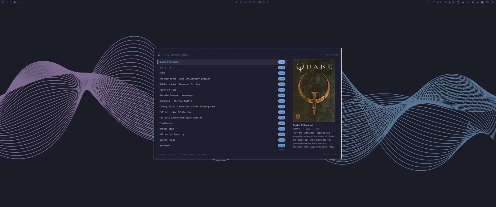
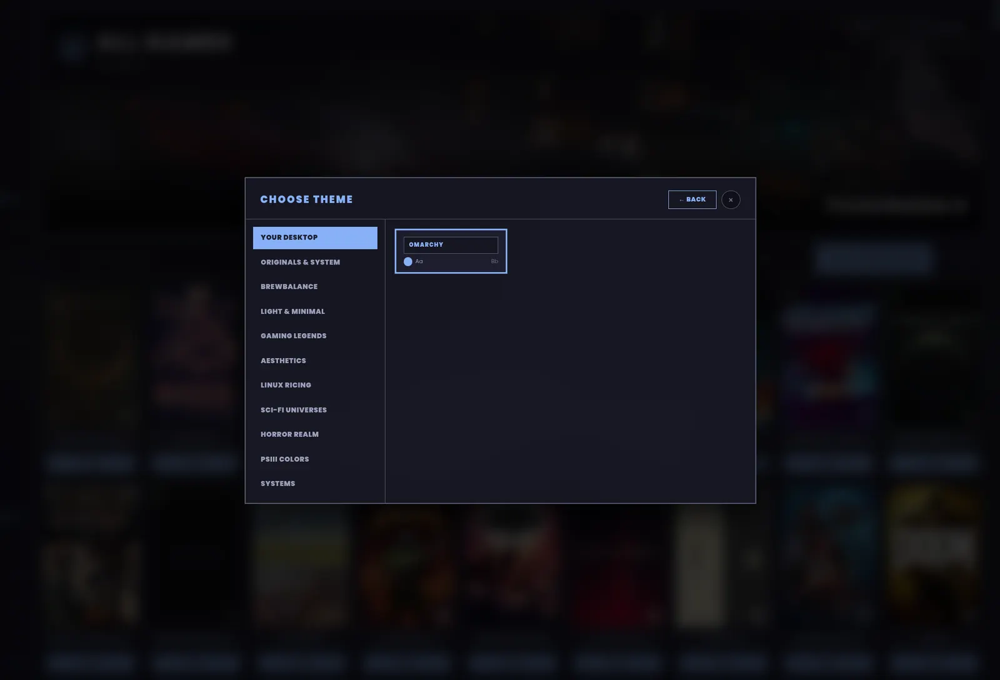

Built for, tested on and tailored to Omarchy
meta+ctrl+G. Type three letters. Enter. It plays. No window first, nothing to click.

It searches games and the app's own actions in one list, so “quake” and “storage” are the same gesture. Games you own but haven't installed show up too, and Enter opens the page with the Install button on it.
The overlay never launches anything itself, it asks the app. So a launch keeps the store picker, the “which engine?” questions and the install check, exactly as if you'd pressed Play.
Installed count when nothing's running, the game's name when something is. Click for a menu to the library, the big screen face, storage and the Control Panel.
Clarity uses the theme Omarchy is using right now. Apply a new one and the app wears it too. The same colours, not an approximation.

The 93 themes that ship with the app are still there. Both faces draw from the same set, so a look follows you to the big screen.
Under a tiler a game normally gets squeezed into a free slot and resized, a second before it goes fullscreen anyway. Here games open fullscreen from the first frame, on the monitor you picked, at the resolution you expect.
The bar widget and the launcher are a companion plugin, about nine kilobytes, so it needs Clarity installed. Without it, it says so and offers to fetch it in a terminal you can watch.
Built and in daily testing, not on Omarchy's plugin marketplace yet. It goes out with 2.0.